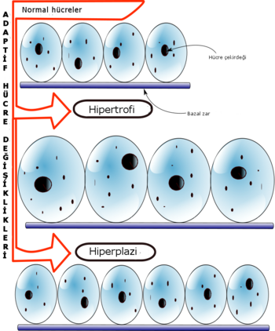

Güçlü olmayı hepimiz isteriz, kimse daha az güç istemez. Ancak bazılarımız, neden güçlü olmamız gerektiğinin farkında bile değil. Bu yazımızda güçlü olmamızın bize ne gibi faydaları olacağından bahsettik ve sizler için 4 önemli madde belirledik. Bunun ardından en iyi kuvvet egzersizleri ile isterseniz evde güç antrenmanı yapabileceğiniz bir liste çıkardık.
Güç Kuvvet Antrenmanı Nedir?
Güç antrenmanı veya kuvvet antrenmanı, vücudumuzun hızını, çevikliğini, patlayıcı gücünü
ve kuvvetini artırmak için yapılan, genellikle tüm vücut kaslarını hızlı şekilde
kasmamıza neden olan egzersizlerden oluşur.
Amacınız daha hızlı olmak, daha çabuk olmak, daha güçlü yumruk atmak veya topa vurmak
ise kuvvet antrenmanı yapmalısınız.
Ancak kuvvet antrenmanının faydası sadece hız ve güç için değildir. Amacınız kas
geliştirmek veya yağ yakmak dahi olsa yapmanız gereken şey güç odaklı çalışmaktır.
Neden Güç Antrenmanı?
İlk olarak bilinmesi gereken vücudumuzun doğal bir gelişim süreci olduğu ve nörolojik (sinir sistemi) adaptasyonun kas hipertrofisinden (kas büyümesi) daha önce gerçekleştiği.
Yani vücudumuz doğal yapısı gereği ilk olarak var olan kaslar ile ağırlığı kaldırmaya adapte oluyor, daha sona eğer yeterli stres ve hacim ile çalışılırsa kas hipertrofisi gerçekleşiyor.
Örneğin antrenman yapmaya yeni başlamış bireylerin ilk önce gücünün haftadan haftaya çok iyi bir şekilde artması (progressive overload) ve bunu takiben kas gelişimi görmeleri tamamen bu sebeple.
Çünkü hiç antrenman yapmasanız da vücudunuzda belli bir miktar kas dokusu bulunuyor ve antrenman yapmaya başladığınızda vücudunuz ilk olarak sinir sistemi adaptasyonu ile mevcut kaslarınızı güçlenebildiği kadar güçlendiriyor.
Aslında güç, kas gelişiminin habercisidir diyebiliriz. Eğer güçleniyorsanız sinir sisteminiz ağırlık kaldırmaya adapte oluyor ve bu da doğal bir sonuç olarak kas gelişimini tetikliyor.
Kuvvet antrenmanının da yapmış olduğu şey güçlenmeyi birinci sıraya alarak ağırlık
kaldırmakta ustalaşmanızı sağlamak ve progressive overload (artarak yükleme yapmak) ile
sinir sisteminizi daha ağır kaldırmaya adapte etmesi ve bu nedenle kas geliştirmenizi
sağlamak (Progressive overload kasa gelişmesi için gereken motor birim aktivasyonlarını,
büyüme faktörlerini ve hücresel sinyalleri sağlar).
Kuvvet antrenmanının bir diğer pozitif yanı gelişim takibinin çok kolay olması. Eğer
ağırlıklarınız haftadan haftaya artıyorsa sinir sisteminiz adapte oluyor ve kas
gelişimine temel hazırlıyor diyebiliriz. Güçlenmek en objektif gelişim göstergesidir.
Eğer güçlenemiyorsanız kas da geliştiremezsiniz, eğer güçleniyorsanız ve doğru bir
antrenman programı ile gerekli çalışma hacmini sağlıyorsanız kas geliştirememeniz söz
konusu bile değildir.
Güç Antrenmanı Yavaşlatmaz
Eğer bir sporcu (rugby oyuncusu, güreşçi, basketbol oyuncusu, sprinter vb…) veya işinde fiziksel performans gerektiren bir bireyseniz kuvvet antrenmanı yapmak ve güç arttırmak yaptığınız spor veya iş ne olursa olsun sizi diğerlerinden bir adım öne götürecektir. Örneğin bir sprintersanız ve çalıştığınız bütün o koşu teknikleri, çabukluk drillerinin yanı sıra bir de squat gibi bir kuvvet egzersizi yapıp mevcut olan kaslarınızı güçlendirip daha fazla kas inşa ederseniz size performans açısından çok büyük katkı sağlayacaktır.
Aynı örneği bir rugby oyuncusunun veya güreşçinin çalışma programına kuvvet egzersizi olarak deadlift eklemesi için de verebiliriz.
Tabii ki yaptığınız sporda veya işte başarılı olmak kuvvet antrenmanından çok daha fazla sizin yapacağınız ciddi teknik çalışmalara, spor spesifik antrenmanlara bağlıdır.
Fakat doğru kuvvet antrenmanı ile yaptığınız bu spesifik çalışmalara ilave olarak bedensel kuvveti de eklemiş olursunuz ve bu da size iyi bir atlet / sporcu olma yolunda bir adım öne atar.
Kuvvet Antrenmanı Kas Geliştirmek (Hipertrofi) için Verimlidir
Kas gelişimi üzerindeki etkilerini giriş kısmında güç arttırma prensibini anlatırken detaylıca bahsettim ama özetle en önemli maddeler:
• Kas hipertrofisinin temeli olan mekanik yüklemeyi tetikler. Böylece kas hipertrofisi
gerçekleşir.
• Progressive overload olmadan kas gelişimi mümkün değil. Doğru bir kuvvet antrenmanı da
progressive overloadı temel almış ayrıca doğru ve gerekli çalışma hacmini barındıran bir
program olacağı için kas gelişimi kaçınılmaz olacaktır.
Kısaca kas hipertrofisinin iki çeşidinden ve önem sırasından bahsetmem gerekirse; kas
hipertrofisi myofibriler ve sarcoplasmic olmak üzere ikiye ayrılır.
Myofibriler dediğimiz hipertrofi kasın içindeki myofibrillerin (mikro teller) güçlenerek
artması ile gerçekleşir ve yazının başından beri bahsettiğim sinir sistemi adaptasyonu
ile bağlantılıdır. Yani vücuda mekanik yükleme bindikçe bu hipertrofi tetiklenir.
Sarcoplasmic hipertrofi ise kasın myofibrillerine (mikro tellere) etki edemez, sadece
kas hücresinin boyutunu arttırır.
Fakat bu güçlenmek anlamına gelmez, sadece kasın boyutu büyümüş olur, bodybuilder tarzı yüksek tekrar yüksek metabolik stres fakat düşük mekanik stres ile çalışarak bu hipertrofi tetiklenir. Yani güçlenmeden kas geliştirmek mümkün fakat bir yere kadar. Eğer doğal bir sporcu iseniz myofibriler kas hipertrofisi olmadan sarcoplasmic hipertrofi sınırlıdır. Peki neden? Çünkü kas hipertrofisi için gerekli olan öncelikli şey mekanik strestir.
Kas hipertrofisinin tetikleyicileri önem sırasıyla aşağıdaki gibidir:
Mekanik yükleme – (myofibriler hipertrofi, progressive overload)
Metabolik stres – (sarcoplasmic hipertrofi)
Kas hasarı – (sarcoplasmic hipertrofi)
Özetlemek gerekirse en optimum şekilde kas geliştirmek için öncelikli hedefimiz doğru kuvvet antrenmanı ile mekanik yüklemeyi sağlamak ve güç artırmak, aynı zamanda eklenen aksesuar egzersizler ve doğru çalışma hacmi ile bu gelişimi sarcoplasmic hipertrofi ile desteklemek olacaktır.
Güç Antrenmanı Yağ Yaktırır
• Yağ yakımı deyince tabii ki en önemli ve temel konunun sağlıklı beslenme olduğunu
biliyoruz. Öncelikle mevcut hesaplayıcılardan aktivite seviyenize göre günlük almanız
gereken kaloriyi hesaplayıp kalori açığı oluşturmanız gerekir. Güç antrenmanı da burada
devreye girer.
• Hem kas gelişimi sağlayıp hem de daha fazla enerji harcayarak kalori açığı
oluşturmanızı sağlar.
• Daha fazla kas kütlesinin metabolizmayı hızlandırdığı için dinlenirken dahi daha fazla
enerji harcatma özelliği vardır.
• Kuvvet antrenmanı sayesinde kas gelişimini tetikleyen aynı hormonlar yağ yakımında da
etkilidir.
• Kas kütlesini arttırarak yağ oranını düşürdüğünüzde sadece kardiyo yapınca
alacağınızdan çok daha estetik bir sonuç alırsınız.
Güç Antrenmanı: En İyi Kuvvet Egzersizleri
En iyi kuvvet egzersizlerini sıralayacak olursak:
1. Deadlift: Kalça kasları paylayıcı her şeyde oldukça önemlidir. Örneğin daha yükseğe
sıçramak, daha hızlı koşmak gibi. Dövüşürken yumruk atmak için bile güçlü kalça
önemlidir, çünkü vücudumuz bununla dönecektir.
2. Box Squat, Squat: Squat yine kalça kaslarını çalıştırır, fakat Box Squat ile beraber
daha patlayıcı şekilde sıçramalar yapabilirsiniz.
3. Hip Thrust: Araştırmalar gösteriyor ki, hızlı koşmak için en verimli egzersizlerden
biri Hip Thrust.
4. Core egzersizleri: İnanılmaz derecede önemlidir. Daha iyi yumruk atmak, daha iyi
dönmek, daha hızlı koşmak için karın kasları ve oblikler çok önemlidir. Aşağıdaki
videoda en iyi gövde egzersizlerini görebilirsiniz.